Smiley Caret
Type :D then press space, or type a colon : and some text after it (like :grin) to search:
You can click on the extension icon to temporarily disable it:
You don’t have to turn off the extension whenever you’re typing in a password, email or telephone field. It automatically ignores such fields. This means your input won’t turn into emoji or cause the search dropdown to appear.
Since Facebook has its own emoji conversion functionality (at least in direct messaging), the shortcodes part of Smiley Caret is turned off.
You can, however, search for emoji via the colon notation. The only difference is that the emoji will be copied to your clipboard when selected and you would have to paste it afterwards. That’s because directly manipulating the user input on Facebook can cause unexpected behavior.
1.1.0 Bugfixes and overhauled logic
1.0.0 Initial release